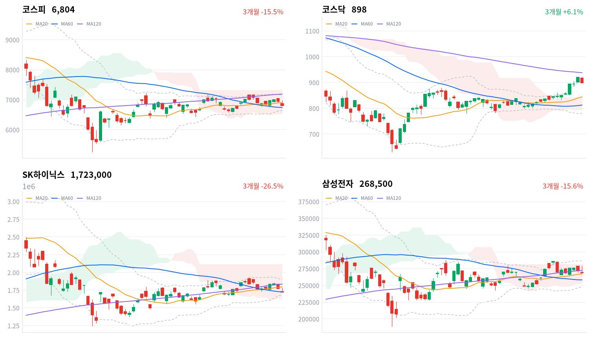

삼성전자 잠정실적을 하루 앞두고 외국인이 코스피를 이틀째 크게 팔았다. 매도는 메모리 대형주를 넘어 전력기기·AI 하드웨어·방산·조선으로 번졌고, 코스닥도 900선 아래로 돌아갔다.
우리는 오늘 하락을 실적 앞에서 많이 오른 AI 하드웨어 전반을 덜어 낸 매도로 본다. 10월 8일 실적 발표와 그날 외국인 매도 규모가 이 판단을 가른다.
코스피는 1.98% 내린 6,804로 마감해 20일 이동평균을 내줬고, 코스닥도 2.34% 내려 898로 900선 아래에서 끝났다. 외국인은 코스피에서 2조6,104억원을 순매도했다(전일 1조7,575억원 순매도, 당일 잠정). 매도는 메모리 대형주에서 멈추지 않았다. 전력기기(HD현대일렉트릭 -8.05%, 효성중공업 -7.8%)와 AI 하드웨어(LG이노텍 -8.23%, 이수페타시스 -7.51%)가 메모리보다 더 크게 밀렸다. 오른 쪽은 화장품·엔터테인먼트 같은 내수 업종이었다. 직전 미국 세션에 3대 지수가 모두 오른 뒤였으니 하락의 원인은 국내 수급과 실적 일정에 있었다.
채권시장은 오늘 주식의 하락을 신용 위험의 문제로 값매기지 않았다. 회사채 AA- 3년물과 국고채 3년물의 금리차는 68.3bp로 2.0bp 좁혀졌다. 최근 2년(533거래일) 가운데 이보다 넓었던 날이 48일뿐이라 수준은 여전히 높지만, 주식이 크게 밀린 날 방향은 반대였다. 머니투데이와 뉴스핌은 하락을 삼성전자 실적 발표 하루 전의 관망 심리로 설명했다. 우리는 관망보다 넓은 움직임으로 본다. 매도는 삼성전자 실적과 직접 관련이 적은 전력기기·AI 하드웨어로 번졌고, 한 달 동안 가장 많이 오른 반도체(WICS 1개월 +21.27%)부터 덜어 냈다.
오늘 하락은 날짜가 정해진 실적 앞에서 많이 오른 AI 하드웨어 전반을 덜어 낸 매도로 판단한다. 뉴스1에 따르면 삼성전자에 대한 외국인 매도는 전일 5,650억원에서 240억원으로 줄었고, SK하이닉스는 이틀 연속 조 단위 순매도를 받았다. 실적을 하루 앞둔 종목의 매도가 오히려 줄었으니 실적 자체에 대한 걱정보다 쏠린 종목의 정리에 가깝다. 시장을 받치던 수급이 끝나 가는 흐름일 수도 있다. 연합뉴스는 그동안 시장을 받친 기타법인 순매수가 7,090억원으로 평소 1조6천억원보다 크게 줄었고, 삼성전자는 자사주 15조원 취득을 마쳤다고 전했다. 이 설명이 맞다면 외국인 매도는 실적과 상관없이 이어진다. 두 설명은 10월 8일과 12일 세션의 외국인 순매도 규모와 삼성전자·SK하이닉스의 코스피 대비 성과에서 갈린다. 잠정실적 기대치는 집계처마다 달라 주가가 얼마를 반영했는지는 알 수 없다.
오늘 하락에는 어제보다 무게를 더 둔다. 지수가 20일선을 내줬고, 매도가 한 업종에서 여러 업종으로 넓어졌기 때문이다. 그래도 방향을 정하기에는 하루가 이르다. 새로 제안할 상품은 없다. 10월 8일 삼성전자 3분기 잠정실적과 그날 외국인 코스피 순매도 규모가 첫 근거이고, 10월 9일 한글날 휴장 뒤 10월 12일 세션이 같은 비교를 한 번 더 한다. 해외 반도체·전력망 테마에서 한국 쪽 가격 근거는 이틀 연속 약해졌다. 다만 같은 날 대만가권은 거의 보합이어서 이 약세는 아직 한국 수급의 문제로 본다. 중국의 석유제품 수출 재개는 아직 발표되지 않았고, 발표가 나오는 날 정유주의 반응이 정제마진 해석을 시험한다.
코스피가 60일 이동평균(6,739) 아래에서 마감하면 이 판단을 거둔다. 오늘 종가는 일목 기준선(6,806)을 간신히 밑돌았고, 60일선과의 거리는 1% 남짓이다. 실적 발표 뒤에도 지수가 이 선을 내주면 쏠린 종목의 정리가 아니라 지수 전체의 추세가 꺾인 것으로 보고 판단을 다시 쓴다.
10월 6일 판단은 무효화됐다. 코스피 종가 6,804가 그날 정한 선인 20일 이동평균 6,895를 밑돌았다. 잘못 본 것은 매도의 범위다. 메모리 대형주에 몰린 매도가 실적 발표 전에 지수 전체로 번지지 않을 것으로 봤지만, 오늘은 전력기기·AI 하드웨어·방산·조선이 함께 밀렸다. 대형 반도체에서 옮겨 간 수급으로 읽었던 코스닥도 하루 만에 900선을 내줬다. 기다린 조건은 아직 오지 않았다. 중국의 수출 재개는 발표되지 않았고, 삼성전자 잠정실적은 10월 8일이다. 실적 전 매도라는 해석의 뼈대는 남기되 범위를 메모리에서 AI 하드웨어 전반으로 넓히고, 반증 선은 60일선으로 새로 정한다.
직전 미국 세션의 강세는 코스피에 닿지 않았다. 10월 6일(현지) 미국 3대 지수는 모두 올랐다(S&P500 +0.58%, 나스닥 +0.45%, 다우 +0.49%). 오늘 아시아는 대체로 약했다(닛케이 -0.92%, 항셍 -0.62%, 대만가권 -0.03%). 상해종합(+0.31%)은 국경절 휴장으로 9월 30일 종가다. 네 지수는 평균 0.32% 내렸고 코스피는 이보다 1.67%포인트 더 내렸다. 반도체 비중이 큰 대만이 보합에 머문 날 한국 반도체만 크게 밀렸으니, 하락의 대부분은 국내 사정에서 나왔다.
이날 코스피는 6,864로 전일 종가 6,941보다 낮게 출발했다. 미국 지수가 오른 다음 날의 하락 출발이라, 개장 전부터 국내 매도가 기다리고 있었던 셈이다. 한국 정규장 동안 미국 선물은 거의 움직이지 않았다(S&P500 선물 -0.13%, 나스닥 선물 -0.16%). 장중 하락을 키운 것은 밖의 가격이 아니라 안의 매도였다.
두 지수 모두 하루 범위의 맨 아래에서 마감했다. 코스피는 저가와 사실상 같은 자리, 코스닥은 저가 바로 위에서 끝나 장 막판까지 매도가 이어졌다. 원/달러 환율은 오전 10시 1,337원이 저점, 11시 1,341원이 고점이었고 1,339원으로 끝났다. 외국인이 주식을 2조원 넘게 판 날에도 원화는 약해지지 않았다.
외국인이 대형 반도체와 AI 하드웨어·전력기기를 팔고 개인이 그 물량을 받은 날이다. 머니투데이와 뉴스핌은 삼성전자 실적 발표를 하루 앞둔 경계 심리를 하락 배경으로 꼽았다. 파이낸셜뉴스는 최근 강세였던 전력기기·AI 인프라 관련주에 차익 실현 매물이 나왔다고 전했다. 실적 시즌의 첫 반응도 거칠었다. LG전자는 3분기 영업이익이 기대에 못 미쳐 10.54% 급락했다. 시간외 거래는 자료가 없어 마감 뒤에도 매도가 이어졌는지는 가리지 못한다.
20일선이 무너지면서 코스피는 60일선 쪽으로 내려왔다. 종가는 20일선(6,901)보다 1.4% 아래, 60일선(6,739)보다 1% 남짓 위에 있고 일목 구름 안이다. 120일선(7,188)과는 5% 넘게 떨어져 있어, 위로 되찾을 선보다 아래 지지선이 훨씬 가깝다. 코스닥은 2.34% 내려 900선 아래로 돌아갔지만 20일선(844)보다 6% 넘게 위에 있어 추세의 자리는 코스피보다 높다. 대형주와 중소형주가 정반대로 움직인 전날과 달리 오늘은 두 시장이 함께 내렸다.
| 지수 | 종가 | 등락률 | 시가 | 고가 | 저가 | 전일 종가 |
|---|---|---|---|---|---|---|
| 코스피 | 6,803.90 | -1.98% | 6,864.25 | 6,977.77 | 6,803.81 | 6,941.39 |
| 코스닥 | 898.43 | -2.34% | 917.45 | 921.73 | 898.25 | 919.92 |
코스피의 반등은 개장 직후 30분이 전부였다. 하락 출발한 지수는 곧 전일 종가를 넘어 고가 6,978까지 올랐지만 그 자리를 지키지 못했고, 오전 11시 반에는 다시 시가 부근으로 돌아왔다. 오후에는 6,850선을 내준 뒤 마지막 30분에 낙폭을 키워 일목 기준선 아래, 하루 저가에서 마감했다. 하락은 대형주 전반에 걸쳤다(삼성전기 -4.24%, 한화에어로스페이스 -4.99%, HD현대중공업 -4.88%). 오른 대형주는 정유·금융 몇 곳뿐이었다(S-Oil +3.21%, KB금융 +0.96%).
코스닥은 917에서 출발해 장 초반 고가 922로 전일 종가를 잠깐 넘었지만, 그 뒤로는 반등다운 반등 없이 내려와 저가 바로 위에서 마감했다. 외국인과 기관이 코스닥에서도 함께 순매도했다(당일 잠정). 전날 코스닥을 끌어올린 수급이 하루 만에 반대로 돌아선 셈이다.

코스피·코스닥·SK하이닉스·삼성전자 3개월 일봉에 이동평균(20·60·120)·볼린저밴드·일목균형표 구름대를 겹쳐 그렸다. 상승 캔들은 녹색, 하락 캔들은 적색이다.
코스피는 20일선(6,901)을 내주고 60일선(6,739) 위, 일목 구름 안에서 마감했다. 20일선을 되찾으면 전환선(6,968)이 다음 저항이고, 60일선을 내주면 볼린저 하단(6,643)이 다음 지지선이다.
코스닥은 볼린저 상단(908) 아래로 내려왔지만 일목 구름 위, 20일선과 60일선 위에 있다. 상단을 되찾으면 20일 고점(922)이 다음 저항이고, 전환선(876)을 내주면 일목 기준선(852)이 다음 지지선이다.
SK하이닉스는 60일선(172만원)에 걸쳐 마감했고 20일선 아래, 일목 구름 안에 있다. 20일선(179만원)을 되찾으면 전환선(183만원)이 다음 저항이고, 60일선을 내주면 볼린저 하단(169만원)이 다음 지지선이다.
삼성전자는 20일선(26만7천원) 바로 위, 일목 구름 안에서 마감했다. 전환선(27만5천원)을 넘으면 구름 상단(28만2천원)이 다음 저항이고, 20일선을 내주면 일목 기준선(26만4천원)이 다음 지지선이다.
위 레벨은 이동평균·볼린저밴드·일목균형표와 스윙 고저를 기계적으로 계산한 값이며 투자 권유가 아니다.
| 주체 | 순매수(억원) |
|---|---|
| 개인 | +26,028 |
| 외국인 | -26,104 |
| 기관 | -7,013 |
| 주체 | 순매수(억원) |
|---|---|
| 개인 | +4,984 |
| 외국인 | -2,564 |
| 기관 | -2,149 |
외국인과 기관이 함께 판 물량을 개인이 혼자 받았다. 외국인은 코스피에서 2조6,104억원을 순매도했다(전일 1조7,575억원 순매도, 당일 잠정). 9월 23일부터 8거래일째 순매도이고, 최근 열 거래일 가운데 9월 28일·29일 다음으로 크다. 전일 값은 어제 집계한 잠정치에서 갱신된 수치다. 기관은 7,013억원을 순매도해(전일 39억원 순매도) 매도 쪽에 섰고, 개인은 2조6,028억원을 순매수했다(전일 7,441억원 순매수).
지수와 수급은 같은 쪽을 가리켰다. 외국인 매도가 커진 날 코스피가 크게 내렸다. 연합뉴스는 기타법인 순매수가 7,090억원으로 평소보다 크게 약해졌다고 전했는데, 우리 수급표에는 기타법인 열이 없어 이 수치는 보도로만 인용한다. 업종별 투자자 자료도 없어 외국인 매도가 반도체와 전력기기에 얼마씩 나뉘었는지는 수치로 확인하지 못한다.
코스닥에서는 외국인이 2,564억원, 기관이 2,149억원을 순매도했다(당일 잠정). 두 주체 모두 전날의 순매수(외국인 1,073억원, 기관 1,047억원)에서 하루 만에 돌아섰고, 개인이 4,984억원을 샀다(전일 2,111억원 순매도). 대형 반도체에서 코스닥으로 수급이 옮겨 간다는 읽기는 하루를 넘기지 못했다.
장중 누적 수급과 프로그램 매매는 받을 수 있는 자료가 없어 싣지 않는다.
| 순위 | 종목/ETF | 구분 | 거래대금 | 비고 |
|---|---|---|---|---|
| 1 | SK하이닉스 | 개별주 | 4.45조원 | - |
| 2 | 삼성전자 | 개별주 | 4.41조원 | - |
| 3 | 반도체 테마 ETF | 테마·롱 | 1.73조원 | 28종 합산 |
| 4 | KODEX CD금리액티브(합성) | 단기금리·현금성 | 0.99조원 | - |
| 5 | 삼성전기 | 개별주 | 0.89조원 | - |
| 6 | SK스퀘어 | 개별주 | 0.63조원 | - |
| 7 | 삼성전자우 | 개별주 | 0.52조원 | - |
| 8 | LG전자 | 개별주 | 0.39조원 | - |
| 9 | 효성중공업 | 개별주 | 0.37조원 | - |
| 10 | 2차전지 테마 ETF | 테마·롱 | 0.32조원 | 14종 합산 |
단위 백만원 원본을 조 단위로 환산했다. 같은 기초자산 ETF는 방향별로, 같은 테마 섹터 ETF는 테마별로 묶고 지수·해외 ETF는 제외했다.
거래는 가격이 내린 쪽에 몰렸다. SK하이닉스(4.45조원)와 삼성전자(4.41조원)가 1·2위였고, 반도체 테마 ETF 28종 합산 1.73조원이 3위다. 거래대금은 매수와 매도를 함께 세므로, 이 쏠림은 메모리 대형주와 반도체 상품에서 손바뀜이 컸다는 뜻이다. 업종 가격과 맞춰 보면 반도체와반도체장비 업종도 1.96% 내렸다.
급락한 종목도 상위 열 종목에 들었다. LG전자가 0.39조원, 효성중공업이 0.37조원으로 8·9위였고, 두 종목은 각각 10.54%, 7.8% 내렸다. 2차전지 테마 ETF는 14종 합산 0.32조원으로 열 번째다. 상위 종목에 인버스 상품은 없고, 레버리지 상품은 테마 합산 안에 들어 있다. KODEX CD금리액티브(합성)는 단기금리를 따르는 대기 자금 상품이라 방향성 거래와 결이 다르다.
하락은 지난 한 달 가장 많이 오른 업종에서 컸다. WICS 12개 섹터 가운데 은행(+0.03%)만 올랐고, 반도체는 4.20% 내렸다. 반도체의 한 달 수익률(+21.27%)은 여전히 섹터 가운데 1위다. 철강소재(-5.46%)·방산(-5.23%)·로봇(-3.74%)·조선(-3.34%)도 크게 내렸다. 네이버 업종으로 보면 하락은 넓었다. 반도체와반도체장비는 172종목 가운데 31종목, 전기제품은 68종목 가운데 11종목, 기계는 105종목 가운데 15종목만 올랐다.
오른 업종은 폭이 넓은 상승이었지만 지수를 받칠 크기는 아니었다. 화장품(+3.62%)은 64종목 가운데 46종목, 방송과엔터테인먼트(+3.77%)는 57종목 가운데 32종목이 함께 올랐다. 석유와가스(+0.47%)도 19종목 가운데 13종목이 올랐다. 세 업종 모두 AI 하드웨어와 거리가 먼 내수·원자재 쪽이다.
메모리 대형주가 지수를 가장 크게 끌어내렸다(SK하이닉스 -2.82%, 삼성전자 -1.29%). 뉴스1은 삼성전자 하락의 배경으로 원화 강세가 이익을 깎을 수 있다는 우려를 들었고, 외국인 매도는 크게 줄었다고 전했다. 같은 매체는 SK하이닉스에 솔리다임 미국 상장설을 둘러싼 중복상장 논란이 영향을 미쳤다고 봤다. 반도체 기판의 이수페타시스는 7.51% 내렸지만 확인된 재료는 없다. 장비의 한미반도체(-4.86%)도 함께 밀렸다.
화장품주는 함께 올랐다(에이피알 +4.99%, 한국화장품제조 +11.9%). 같은 업종의 한국콜마(+4.82%)와 코스맥스(+3.52%)도 올랐지만 확인된 재료는 없다.
정유주는 코스피와 반대로 올랐다(S-Oil +3.21%, GS +3.88%, SK이노베이션 +1.01%). 중국의 석유제품 10월 수출 중단 뒤 재개 여부가 아직 정해지지 않은 상태이고, 오늘 새로 나온 재료는 확인되지 않았다.
전력기기·전선주가 크게 내렸다(HD현대일렉트릭 -8.05%, 효성중공업 -7.8%, LS -6.51%, 가온전선 -6.27%, 대한전선 -6.14%, LS ELECTRIC -5.52%). 파이낸셜뉴스는 최근 강세였던 전력기기·AI 인프라 관련주에 차익 실현 매물이 나왔다고 전했다. 종목별 악재는 확인되지 않았다.
LG전자는 10.54% 급락했다. 파이낸셜뉴스에 따르면 3분기 매출은 23조8,270억원, 영업이익은 7,818억원으로 전년보다 늘었지만 시장 기대에 못 미쳤고, 연결 자회사 LG이노텍의 수익성 부진이 겹쳤다. LG이노텍도 8.23% 내렸다. 전날 AI 데이터센터 냉각 기대로 오른 몫을 실적 하나가 모두 되돌렸다.
방산·조선도 약했다(LIG디펜스앤에어로스페이스 -6.26%, 한국항공우주 -5.73%, HD한국조선해양 -5.34%). 거래대금 상위 종목 가운데 케이씨텍(+14.53%)과 하이브(+6.37%)는 크게 올랐지만 두 종목 모두 확인된 재료는 없다.
국고채는 단기물이 더 올라 커브가 평평해졌고, 신용 금리차는 오히려 좁혀졌다. 단기물이 2.8bp 올라 3.961%, 10년물은 0.7bp 올라 4.376%가 됐다. 두 만기의 금리차는 41.5bp로 2.1bp 좁혀졌고, 최근 2년(533거래일) 가운데 넓은 쪽 23% 안이다. 직전 미국 세션(10월 6일) 10년물은 4.0bp 내린 5.271%였으니, 오늘 국고채 단기물 상승은 미국 금리를 따라간 움직임이 아니다. 원/달러 환율은 1,339원으로 하루 범위의 아래쪽에서 끝났다.
| 지표 | 금리 | 전일比(bp) | 기준일 |
|---|---|---|---|
| 국고채 3년 | 3.961% | +2.8 | 2026-10-07 |
| 국고채 10년 | 4.376% | +0.7 | 2026-10-07 |
| CD 91일 | 3.24% | 0.0 | 2026-10-07 |
| 회사채 AA- 3년 | 4.644% | +0.8 | 2026-10-07 |
| 한국은행 기준금리 | 3.00% | 0.0(전월比) | 2026-09 |
기준금리는 9월 기준이다. 나머지는 10월 7일 값이고 전일比는 10월 6일 대비다.
같은 단기물 금리는 기준금리(3.00%)보다 96.1bp 높고, 최근 2년 가운데 넓은 쪽 17% 안이다. 이 격차에는 정책 경로 기대와 기간프리미엄이 섞여 있다. 오늘 단기물이 장기물보다 크게 오른 이유는 보도로 확인되지 않았다. 연합뉴스는 유가 상승과 미국 금리 반등을 하락 배경으로 꼽았지만, 직전 미국 세션 종가로는 10년물이 내렸다. 한국 시간 중 미국 금리의 움직임은 우리가 받는 일별 자료로는 확인할 수 없다.
신용 쪽은 주식과 다른 방향이었다. 같은 만기의 회사채 AA-는 0.8bp 올라 4.644%였지만 국고채가 더 올라 두 금리차는 68.3bp로 좁혀졌다. 주식이 크게 밀린 날 신용 금리차가 좁혀졌으니 채권시장은 오늘의 매도를 기업 부도 위험이 커진 신호로 받지 않았다. CD 91일물은 3.24%로 움직이지 않았다. 원화는 외국인 주식 매도에도 하루 내내 1,337~1,341원의 좁은 범위에 머물렀다.
| 미국 참조 지수 | 구분 | 관측 | 등락률 | 업종 내 상승 비율 | 기준일 |
|---|---|---|---|---|---|
| 반도체·AI 하드웨어 | 업종 | 반도체와반도체장비 | -1.96% | 18% | 10/7 |
| 반도체·AI 하드웨어 | 종목 | SK하이닉스 | -2.82% | – | 10/7 |
| 반도체·AI 하드웨어 | 종목 | 삼성전자 | -1.29% | – | 10/7 |
| 반도체·AI 하드웨어 | 지수 | 대만가권 | -0.03% | – | 10/7 |
| 전력망 | 업종 | 전기제품 | -1.32% | 16% | 10/7 |
| 전력망 | 종목 | HD현대일렉트릭 | -8.05% | – | 10/7 |
| 전력망 | 종목 | LS ELECTRIC | -5.52% | – | 10/7 |
| 전력망 | 종목 | 효성중공업 | -7.80% | – | 10/7 |
| 방산 | 종목 | 한화에어로스페이스 | -4.99% | – | 10/7 |
| 방산 | 종목 | LIG디펜스앤에어로스페이스 | -6.26% | – | 10/7 |
| 산업재 | 업종 | 기계 | -2.17% | 14% | 10/7 |
| 산업재 | 종목 | HD현대중공업 | -4.88% | – | 10/7 |
| 산업재 | 종목 | 한화오션 | -4.02% | – | 10/7 |
| 금속·광업 | 종목 | POSCO홀딩스 | -3.30% | – | 10/7 |
| 금융 | 업종 | 은행 | -0.38% | 18% | 10/7 |
| 금융 | 업종 | 증권 | -1.53% | 18% | 10/7 |
| 금융 | 종목 | KB금융 | +0.96% | – | 10/7 |
| 금융 | 종목 | 신한지주 | -0.29% | – | 10/7 |
| 소프트웨어 | 종목 | NAVER | -1.10% | – | 10/7 |
| 에너지 | 업종 | 석유와가스 | +0.47% | 68% | 10/7 |
| 에너지 | 종목 | S-Oil | +3.21% | – | 10/7 |
| 에너지 | 종목 | SK이노베이션 | +1.01% | – | 10/7 |
| 일본 | 지수 | 닛케이 | -0.92% | – | 10/7 |
| 중국 | 지수 | 항셍 | -0.62% | – | 10/7 |
| 중국 | 지수 | 상해종합 | +0.31% | – | 9/30 |
외국인이 코스피를 크게 판 날에도 원화는 강한 쪽에 머물렀다. 한국장 시간대 원/달러는 1,341원(11:00)과 1,337원(10:00) 사이를 오가다 1,339원에서 마지막으로 관측됐다. 서울 외환시장 공식 종가가 아닌 장중 관측값이다. 해외주식으로 바꿔 둘 원화의 환산 조건은 오늘 크게 달라지지 않았다. 대기 자금의 참고 금리는 단기 쪽만 조금 올랐다. CD 91일은 3.240%로 변화가 없었고, 국고채 3년은 2.8bp 올라 3.961%가 됐으며, 기준금리는 3.000%다.
반도체·AI 하드웨어와 전력망은 한국 시간대에 함께 약했다. 반도체와반도체장비 업종은 -1.96%였고 오른 종목 비율이 18%에 그쳐 몇 종목이 아닌 업종 전체의 하락이었다(SK하이닉스 -2.82%, 삼성전자 -1.29%). 같은 시간 대만가권은 -0.03%로 거의 움직이지 않아, 오늘의 약세는 아시아 반도체 전체보다 한국 수급과 실적 일정 쪽에 가깝다. 전력망 쪽 전기제품 업종은 -1.32%, 오른 종목 비율 16%였고 대형주가 더 크게 밀렸다(HD현대일렉트릭 -8.05%, 효성중공업 -7.80%, LS ELECTRIC -5.52%). 이 관측이 미국장의 같은 테마를 앞서 움직인다는 근거는 아직 없다. 직전 미국 세션이 오른 뒤의 국내 매도라 미국 개장 뒤 같은 방향이 나오는지는 따로 봐야 한다.
매일경제에 따르면 더불어민주당이 추진하는 자본시장법 개정안은 의결권 공동행사자를 판단하는 기준을 좁혀, 경영권에 중대한 영향을 주려는 목적이 있을 때만 지분을 합산하도록 한다. 여러 운용사가 주총 안건에 의견을 맞춰도 합산 보고 의무가 생기지 않게 된다. 이 개정은 멀티플을 건드린다. 기관의 공동 의결권 행사가 쉬워지면 배당·지배구조 개선 요구가 늘고, 지배구조 할인이 큰 저PBR 금융·지주가 수혜 쪽, 대주주 지배력이 강한 기업이 부담 쪽이다. 오늘 가격에서는 이 재료가 보이지 않았다. 은행 업종은 0.38% 내렸고 11종목 가운데 2종목만 올랐다. 상임위 상정 일정은 미확정이다.
아시아경제는 미국의 의약품 관세 기준이 구체화됐다고 보도했다. 한국산 특허의약품에는 원칙적으로 15% 관세가 붙지만, 미국 정부와 협약을 맺은 제약사는 2029년 1월까지 면제받고 바이오시밀러는 대상에서 빠졌다. 경로는 이익이다. 관세를 포함한 총비용이 미국 현지 생산보다 낮으면 위탁생산 고객이 송도 생산을 고를 수 있고, 지연됐던 발주 협상이 다시 움직일 수 있다. 수혜 쪽은 위탁생산과 바이오시밀러다. 오늘 가격은 엇갈렸다(삼성바이오로직스 -2.52%, 한미약품 +2.1%). 제약 업종은 0.68% 내렸지만 175종목 가운데 100종목이 올라, 지수 매도 속에서도 업종 안의 상승 종목은 많았다. 추가 고시 일정은 미확정이다.
헤럴드경제에 따르면 한국거래소는 서울남부지법이 주연테크·케이엠제약의 상장폐지결정 효력정지 가처분을 받아들이자 시가총액 미달 기업의 후속조치를 유예했다. 관리종목으로 지정된 코스피 19개, 코스닥 40개 종목은 매매정지로 넘어가지 않고 계속 거래된다. 경로는 멀티플이다. 부실기업 퇴출이 늦어지면 코스닥 할인을 줄이려던 정책의 속도도 늦어진다. 해당 소형주에는 단기 안도, 코스닥 전체의 질 개선 기대에는 부담이지만 시가총액이 작아 지수 영향은 작다. 거래소의 규정 보완 일정은 미확정이다.
중국 국영 정유사들은 10월 석유제품 수출을 멈췄고, 매일신문과 서울경제는 국경절 연휴가 끝나는 10월 7일 이후 재고와 가동 상황에 따라 재개할 수 있다고 10월 2일 보도했다. 오늘까지 재개 발표는 확인되지 않았다. 경로는 이익이다. 아시아 석유제품 공급이 줄면 국내 정유사의 정제마진이 넓어진다. 수혜는 정유, 부담은 석유제품을 원료로 쓰는 업종이다. 오늘 석유와가스 업종은 0.47% 올랐고 업종 안에서도 오른 종목이 많았다. 다만 직전 미국 세션에 원유도 올라 정제마진과 원유 가격 가운데 어느 쪽이 정유주를 밀었는지는 가르지 못한다. 재개 발표 날짜는 미확정이고, 발표 다음 세션의 정유주 반응이 분기점이다.
삼성전자는 10월 8일 3분기 잠정실적을 발표한다. 영업이익 기대치는 보도마다 집계처와 시점이 달라 100조원 이상이라는 수준으로만 알려져 있다. 이 발표는 이익 경로로 반도체 대형주에 닿고, 발표 뒤 외국인 대형주 매도가 줄어드는지가 수급 경로의 확인이다. 국내 증시는 10월 9일 한글날에 쉬고 10월 12일에 다시 열린다.
오늘 뉴스는 삼성전자 실적 하루 전의 수급과 환율, 기관 의결권·상장폐지 같은 제도 변화에 몰렸다.
'100조 시대vs환율 부담'…'실적 경계' 삼전닉스 동반 하락[핫종목](종합)뉴스1 · 10월 7일
삼성전자와 SK하이닉스가 실적 기대와 환율 부담 사이에서 엇갈린 수급을 보였다. 삼성전자는 8일 발표할 3분기 잠정실적에서 100조 원을 넘는 역대급 영업이익을 낼 것으로 예상되지만, 최근 달러·원 환율 하락이 이익을 줄일 수 있다는 우려로 7일 1.29% 내린 26만 8500원에 마감했다. 다만 외국인 매도는 전일 5650억 원에서 240억 원으로 크게 줄었고, 우선주는 820억 원 순매수됐다. 매체는 내년 메모리 공급 부족과 HBM 기대가 반영된 것으로 봤다. 반면 SK하이닉스는 외국인이 이틀 연속 조 단위로 순매도하며 2.82% 내린 172만 3000원으로 마감했다. 솔리다임 미국 상장설을 둘러싼 중복상장 논란이 영향을 미쳤다는 분석이다.
유로화 반등·위험선호 '달러·원 하락'…'저가 매수' 1340원선 회복(종합)뉴스1 · 10월 7일
유로화 반등과 미국 장기 국채금리 하락으로 달러화가 약해지면서 7일 달러·원 환율은 전 거래일보다 3원가량 내린 1340원으로 마감했다. 장중 1330원대까지 내렸으나 저가 매수와 결제 수요가 들어오며 낙폭을 줄였다. 글로벌 시장에서는 프랑스 대선 후보의 재정 건전화 의지 표명으로 프랑스 국채금리가 내리고 유로화가 반등했다. 미국 10년물 국채금리는 5.28% 안팎으로 전일보다 2bp 이상 내려왔고, S&P500과 나스닥은 사상 최고 종가를 기록했다. 국내에서는 대규모 무역흑자와 수출업체 네고 물량이 환율 상단을 막았지만, 반도체 사이클이 꺾이면 달러 공급 우위가 이어지지 않을 수 있다는 분석도 나왔다.
코스피, 美금리 반등·삼전 실적 경계에 하락…6,800선 턱걸이(종합)연합뉴스 · 10월 7일
코스피는 7일 미국 금리 반등과 삼성전자 실적 발표 임박에 따른 경계감으로 137.49포인트(1.98%) 내린 6,804로 마감했다. 외국인과 기관투자자가 각각 2조6천87억원, 6천684억원을 순매도했고 개인은 2조5천570억원을 순매수했다. 그간 수급을 이끈 기타법인의 순매수는 7천90억원으로 평소 1조6천억원보다 크게 약해졌다. 삼성전자는 자사주 15조원어치 취득을 마쳤고 SK하이닉스는 예정량의 80% 정도를 체결했다. 매체는 유가 상승과 미 국채 10년물 수익률의 5.3% 돌파를 금리 반등 배경으로 들었다. 코스닥은 2.34% 내린 898.43으로 마감했다.
송도냐 미국이냐…관세표 받아든 삼바의 계산법[클릭e종목]아시아경제 · 10월 7일
미국의 의약품 관세 기준이 구체화하면서 삼성바이오로직스는 송도와 미국 록빌 공장 가운데 고객사별로 최적의 생산지를 고를 수 있게 됐다. 한국산 특허의약품에는 원칙적으로 15% 관세가 붙지만, 미국 정부와 협약을 맺은 제약사는 2029년 1월까지 면제받을 수 있고 바이오시밀러는 현재 관세 대상에서 빠져 있다. 관세 면제 대상 고객이면 한국 생산의 원가 경쟁력이 유리하고, 관세를 포함한 총비용이 미국 현지 생산보다 낮으면 송도에서 만들 수 있다. 관세율과 면제 조건이 명확해지면서 지연됐던 신규 프로젝트의 발주 결정과 수주 협상이 다시 움직일 환경이 생겼다. 회사는 폴리펩타이드 인수로 펩타이드 개발·생산까지 포트폴리오를 넓히고 있다.
5% 미만 운용사 연합군 가능 … 상장사 '경영 개입' 거세지나매일경제 · 10월 7일
더불어민주당이 추진하는 자본시장법 개정안은 기관투자자의 공동 의결권 행사 부담을 덜어 주는 내용을 담았다. 현행 5%룰에서 의결권 공동행사자 판단 기준을 좁혀, 경영권에 중대한 영향을 주려는 목적이 있을 때만 지분을 합산하도록 했다. 여러 운용사가 총회 안건에 일시적으로 의견을 맞춰도 합산 보고 의무가 생기지 않는다. 감사위원 선임 때 최대주주 측을 제약하는 3%룰과 맞물리면 기관의 영향력이 커질 수 있다. 업계는 주주활동의 법적 제약 완화로 평가하지만, 기업 측은 기관의 연대 움직임을 파악하기 어려워지고 배당·지배구조 개입이 늘 수 있다고 우려한다. 저PBR 문제를 풀기 위한 규제 완화라는 입장과 글로벌 투명성 강화 흐름에 역행한다는 비판이 맞선다.
‘시총 미달’ 기업 상폐 멈춘다…한숨 돌린 주연테크·케이엠제약 [투자360]헤럴드경제 · 10월 7일
한국거래소가 시가총액 미달로 상장폐지 절차를 밟던 기업들의 후속 조치를 유예하기로 했다. 서울남부지방법원이 주연테크와 케이엠제약의 상장폐지결정 효력정지 가처분 신청을 인용한 데 따른 조치다. 법원은 내년 1월 예정이던 시총 기준 상향을 올해 7월로 앞당긴 점이 비례의 원칙과 예측 가능성을 훼손했다고 지적했다. 시총 미달로 관리종목에 지정된 상장사는 코스피 19개, 코스닥 40개이며, 이들은 매매정지 등 다음 단계로 넘어가지 않고 계속 거래된다. 다만 10월 2일 이전에 상장폐지가 결정돼 거래정지 중인 8개 기업은 정지가 이어진다. 관리종목 지정 기준 자체는 법원이 문제 삼지 않았다.
테마 떴다하면 찍어내는 ETF … 하위 50개 순자산 고작 1700억매일경제 · 10월 7일
국내 ETF 시장에서 인기 테마마다 비슷한 상품을 앞다퉈 내놓는 '베끼기 경쟁'의 병폐가 커지고 있다. 스페이스X 상장 기대감으로 지난 3~4월 우주산업 ETF 4개가 잇달아 나왔지만 로켓랩 등 공통 종목을 담아 차별성이 부족했다. TIGER 미국우주테크의 일평균 거래대금은 6월 2000억원에서 9월 90억원으로 급감했다. 게임(2018년)과 메타버스(2021년)도 여러 운용사가 동시에 내놓은 뒤 관심이 식어 순자산이 수백억원대로 줄었다. 운용사들은 차별화보다 보수 인하와 마케팅에 집중하는 악순환을 반복한다. 상위 50개 ETF가 전체 순자산 266조원의 60%를 차지하는 반면 하위 50개의 합산 순자산은 1700억원에 그친다.
반도체ELS에 뭉칫돈 몰리는데… 3년내 삼전닉스 휘청이면 대규모 원금 손실 주의보[최재원의 이슈플러스]매일경제 · 10월 7일
박스권 장세 속에 주가연계증권(ELS) 발행액이 급증하고 있다. 올해 3분기 ELS 발행액은 7조6188억원으로 전년 같은 기간보다 32.6% 늘었다. 연 10~20%의 높은 쿠폰이 투자자를 끌어모으는 가운데 삼성전자와 SK하이닉스를 기초자산으로 하는 상품이 많이 나오고 있다. 그러나 3년 만기 상품에서 기초자산이 기준가격의 35% 미만으로 내려가면 녹인 조건이 발동하고, 만기 때 상환 조건을 채우지 못하면 투자자는 주가 하락률만큼 원금을 잃을 수 있다. 반도체 업황은 경기·공급·수요에 민감하고 만기 무렵의 실적은 증권사도 내다보지 못한다. 지수형 ELS도 코스피200이 반도체 대형주에 크게 좌우돼 안심할 수 없다.
SK디앤디, 1천억 유상증자… 디폴트 위기 급한불 '진화'매일경제 · 10월 7일
SK디앤디가 채무불이행 위기를 넘기려고 주주배정 유상증자 1010억원을 확정했다. 최대주주 한앤컴퍼니가 배정 물량 795억원을 전량 청약하기로 했다. 발행가는 주당 2260원이고 신주 4468만1000주를 발행한다. 조달 자금 가운데 620억원은 이달 말 만기인 사모사채 상환에, 390억원은 군포 지식산업센터 중도금 대출 관련 연대보증 이행에 쓴다. 회사는 유상증자가 없으면 현금이 -612억원으로 떨어져 채무 이행이 불가능하다고 밝혔다. 신용등급 하락과 업황 악화로 회사채 조달이 막혀 주주 자금에 기댔다. 다만 군포 프로젝트 관련 연대보증 560억원과 본PF 4290억원에 대한 채무인수 약정 등 우발채무가 남아 있다.
8월 日 경기일치 지수 118.7·1.9P↓…"반년 만에 하락"뉴시스 · 10월 7일
일본 내각부가 발표한 2026년 8월 경기일치 지수는 전월 120.6에서 1.9포인트 내린 118.7이었다. 지수가 전월보다 내려간 것은 6개월 만이며, 5월 이후 가장 낮다. 구마모토 지진과 태풍 여파로 자동차와 알루미늄 건자재 생산이 줄면서 생산재 출하지수와 내구소비재 출하지수, 수출수량지수가 내렸다. 다만 고용과 소득 여건 개선, 정부 정책으로 민간소비가 받쳐 경기는 완만한 회복세를 이어갔다. 수개월 뒤를 가리키는 경기선행 지수는 118.0으로 전월 117.6에서 0.4포인트 올라, 두 달 연속 오르며 12년 7개월 만에 최고치를 기록했다. 역대 최대 규모 재정예산과 생활비 부담 완화 조치가 상승을 이끌었다.
[올댓차이나] 中 9월 외환보유액 3조4002억＄·1.11%↓…예상보다 큰폭 감소뉴시스 · 10월 7일
중국의 9월 외환보유액은 3조4002억5100만 달러로 전월보다 1.11% 줄었다. 시장 예상치 3조4200억 달러보다 약 200억 달러 적다. 감소 원인은 달러화 강세와 금융자산 가격 하락이 겹친 결과로, 달러지수는 2.06% 오르고 위안화는 0.22% 올랐다. 외환보유액은 3개월 만에 줄었지만 13개월 연속 3조3000억 달러를 웃돌았다. 인민은행 금 보유량은 7747만 온스로 74만 온스 늘어 2024년 10월부터 23개월 연속 증가했다. 그러나 국제 금값이 6% 넘게 내려 달러 환산 금 자산은 265억6000만 달러(7.59%) 줄었다. 중국은 지정학적 불확실성과 국제 통화체계 변화에 대비해 안전자산 비중을 높이고 있다.
우크라인 62% "전쟁, 필요한 만큼 견딜 것"…75% "협상도 가능"뉴스1 · 10월 7일
키이우국제사회학연구소가 9월 12~21일 우크라이나 정부 통제 지역 성인 1002명을 조사한 결과 62%가 전쟁을 필요한 만큼 견딜 준비가 돼 있다고 답했다. 7월 말~8월 초 조사와 큰 차이가 없어, 러시아의 민간 기반시설 공격 강화에도 장기전 의지가 흔들리지 않았다. 79%는 우크라이나의 최종 승리를 믿었지만, 승리를 확신하는 응답은 7월 60%에서 9월 47%로 약 13%포인트 줄었다. 협상 가능성에는 75%가 열려 있다고 답해 2025년 2월 조사의 74%와 비슷했다. 연구소는 국민들이 전쟁 부담을 감내하면서도 받아들일 수 있는 평화를 위한 타협에는 열려 있다고 평가했다.
월급 1억3천만에 보너스 7천만원 준대도…호르무즈 통과 유조선주들 고육지책매일경제 · 10월 7일
호르무즈 해협에서 이란의 공격이 심해지면서 유조선 선원들의 급여가 치솟고 있다. 유조선 선장은 보통 월 1만5천달러(약 2천만원)를 받지만, 호르무즈를 지날 때는 월급이 10만달러(약 1억3천만원)로 6배 늘고 운항마다 5만달러(약 7천만원)의 보너스를 더 받는다. 일반 선원 월급도 4~6배 올랐다. 해협을 오가는 셔틀 유조선은 가장 위험한 구간을 되풀이해 지나며 원유를 나른다. 해협 통제권을 협상 지렛대로 보는 이란은 이런 선박을 계속 공격하고 있다. 최근 파나마 선적 유조선이 정체불명의 발사체에 맞아 선원 12명이 다쳤고, 이슬람혁명수비대는 해협 접근 선박에 회항하지 않으면 공격하겠다고 경고했다.
10월 6일 보고서는 외국인의 대형 반도체 매도가 삼성전자 잠정실적을 앞둔 일시적 매도인지, 메모리 대형주 비중을 구조적으로 줄이는 흐름인지를 물었다. 확인 기간은 10월 8일 개장부터 12일 장 마감까지라 오늘은 시험 전이다. 그래도 기간 직전의 모습은 기록해 둔다. 외국인 순매도는 이틀 누적 4조3,679억원으로 커졌고, 보도로는 삼성전자에 대한 매도가 크게 줄어든 대신 SK하이닉스와 전력기기·AI 하드웨어로 매도가 넓어졌다. 일시적 매도라면 실적 당일 종목의 매도가 줄어드는 모습과 맞고, 구조적 이동이라면 매도 범위가 넓어지는 모습과 맞아 오늘 자료는 어느 쪽도 가르지 못한다. 기준은 그대로 둔다. 10월 8일 또는 12일 가운데 한 세션에서 외국인 코스피 순매도가 5,000억원 미만으로 줄고 삼성전자가 코스피를 웃돌면 이벤트 전 매도, 두 세션 모두 1조원을 넘고 두 종목이 코스피를 밑돌면 구조적 이동 쪽이다.
입력은 코스피 외국인 순매수 10월 7일 -26,104억원(당일 잠정)과 10월 6일 -17,575억원(어제 잠정치 -17,655억원에서 갱신)이다. 이틀 누적 = 두 값의 합. 결과는 -43,679억원, 즉 4조3,679억원 순매도다.
10월 1일 보고서의 질문은 이번에도 시험 조건이 생기지 않았다. 미국 10년물이 하루 5bp 이상 오른 다음 세션에 반도체가 코스피를 웃돌면 이익이 할인율을 이긴다고 보는 조건이었는데, 직전 미국 세션 10년물은 오히려 4.0bp 내렸다. 남은 세션은 10월 8일 하나이고, 그날은 삼성전자 잠정실적이 겹쳐 조건이 생겨도 이익 재료가 섞인 날로 따로 적는다.
10월 2일 보고서는 정유주 강세가 중국 수출 중단에서 온 정제마진 재료인지, 원유 가격을 따른 것인지를 물었다. 시험의 전제는 직전 미국 세션에 WTI가 내린 날인데, 10월 6일 WTI는 0.54% 올라 오늘은 시험일이 아니다. 석유와가스 업종은 코스피를 크게 웃돌았지만 원유가 함께 오른 날이라 두 설명을 가르지 못한다. 중국의 수출 재개 발표도 아직 없다. 확인 기간은 10월 13일 장 마감까지다.
세 질문 모두 다음 주 초에 답이 몰린다. 10월 8일 삼성전자 잠정실적과 그날 외국인 순매도가 첫 시험이고, 한글날 휴장 뒤 10월 12일 세션이 같은 비교를 마무리한다.